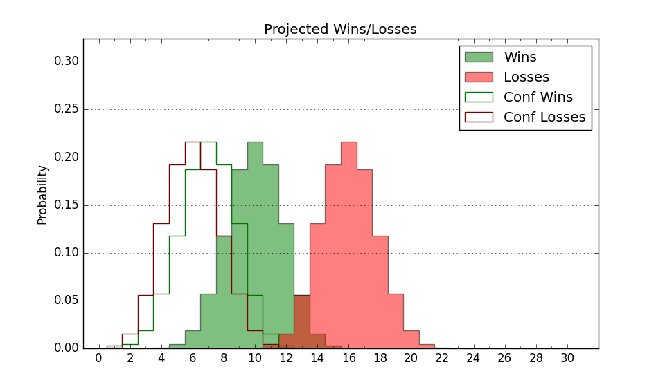

| Home | Game Probabilities | Conferences | Preseason Predictions | Odds Charts | NCAA Tournament |
| City: | Durham, North Carolina | |
| Conference: | Mid-Eastern (2nd)
| |
| Record: | 10-4 (Conf) 13-11 (Overall) | |
| Ratings: | Comp.: -1.7 (190th) Net: -1.6 (189th) Off: 98.7 (268th) Def: 100.3 (118th) SoR: 0.0 (139th) |
| Remaining | ||||||
|---|---|---|---|---|---|---|
| Date | Opponent | Win Prob | Pred. | |||
| Previous | Game Score | |||||
| Date | Opponent | Win Prob | Result | Off | Def | Net |
| 11/7 | @Virginia (33) | 7.1% | L 61-73 | 16.7 | -12.5 | 4.2 |
| 11/10 | @Appalachian St. (193) | 36.0% | L 74-79 | -3.0 | -5.8 | -8.8 |
| 11/14 | @Liberty (55) | 9.7% | L 63-79 | 4.4 | -8.3 | -4.0 |
| 11/26 | Gardner Webb (186) | 64.2% | W 58-53 | -14.0 | 13.0 | -1.0 |
| 11/29 | UNC Asheville (141) | 53.9% | W 79-66 | 18.6 | -6.2 | 12.4 |
| 12/1 | @Radford (176) | 32.3% | L 78-80 | 14.5 | -11.5 | 3.1 |
| 12/6 | @Marquette (15) | 5.2% | L 78-90 | 15.7 | -4.6 | 11.1 |
| 12/13 | @LSU (153) | 28.7% | L 57-67 | -11.6 | 6.8 | -4.8 |
| 12/17 | @Gardner Webb (186) | 34.5% | L 70-72 | 3.2 | -2.2 | 1.0 |
| 12/20 | The Citadel (335) | 89.2% | W 81-74 | -1.1 | -7.4 | -8.4 |
| 1/7 | @Morgan St. (287) | 56.5% | L 73-78 | 5.8 | -13.9 | -8.2 |
| 1/9 | @Coppin St. (323) | 66.5% | W 64-59 | -14.2 | 15.4 | 1.1 |
| 1/14 | South Carolina St. (342) | 90.6% | W 71-67 | -8.5 | -7.4 | -15.9 |
| 1/21 | Delaware St. (349) | 92.1% | W 74-55 | -1.8 | 2.4 | 0.6 |
| 1/23 | Md Eastern Shore (236) | 74.6% | L 58-59 | -18.8 | 3.6 | -15.2 |
| 1/28 | @Howard (227) | 43.6% | L 67-71 | -4.1 | -6.8 | -10.9 |
| 1/30 | @Norfolk St. (183) | 33.9% | L 71-77 | 14.3 | -18.4 | -4.2 |
| 2/11 | Morgan St. (287) | 81.5% | W 83-63 | 15.5 | -2.6 | 13.0 |
| 2/13 | Coppin St. (323) | 87.1% | W 85-52 | 13.1 | 17.0 | 30.1 |
| 2/18 | @Delaware St. (349) | 77.4% | W 66-58 | -10.5 | 10.8 | 0.4 |
| 2/20 | @Md Eastern Shore (236) | 46.3% | W 68-63 | -3.4 | 13.3 | 10.0 |
| 2/25 | Howard (227) | 72.5% | W 68-60 | -2.1 | 4.7 | 2.6 |
| 2/27 | Norfolk St. (183) | 63.6% | W 76-75 | -5.7 | -2.3 | -7.9 |
| 3/2 | @South Carolina St. (342) | 74.0% | W 71-64 | -16.6 | 13.3 | -3.3 |
| Stats & Trends | |||||
|---|---|---|---|---|---|
| Current | Day | Week | Month | Season | |
| Composite | -1.7 | -0.1 | -0.3 | +2.8 | +9.9 |
| Comp Rank | 190 | -1 | -2 | +28 | +119 |
| Net Efficiency | -1.6 | -0.1 | -0.5 | +2.3 | -- |
| Net Rank | 189 | -1 | -4 | +28 | -- |
| Off Efficiency | 98.7 | -0.0 | -1.3 | -0.6 | -- |
| Off Rank | 268 | -3 | -43 | -40 | -- |
| Def Efficiency | 100.3 | -0.1 | +0.7 | +2.9 | -- |
| Def Rank | 118 | -- | +18 | +79 | -- |
| SoS Rank | 270 | -3 | -28 | -102 | -- |
| Exp. Wins | 13.0 | -- | +0.9 | +2.3 | +3.2 |
| Exp. Conf Wins | 10.0 | -- | +0.9 | +2.3 | +2.7 |
| Conf Champ Prob | 0.0 | -- | -22.9 | -3.3 | -9.8 |

| Advanced Stats | ||
|---|---|---|
| Stat | Value | Rank |
| Off Eff FG % | 0.489 | 244 |
| Off Ast Ratio | 0.125 | 306 |
| Off ORB% | 0.285 | 133 |
| Off TO Rate | 0.184 | 335 |
| Off FT Ratio | 0.318 | 170 |
| Def Eff FG % | 0.506 | 166 |
| Def Ast Ratio | 0.154 | 267 |
| Def ORB% | 0.302 | 295 |
| Def TO Rate | 0.174 | 69 |
| Def FT Ratio | 0.347 | 257 |